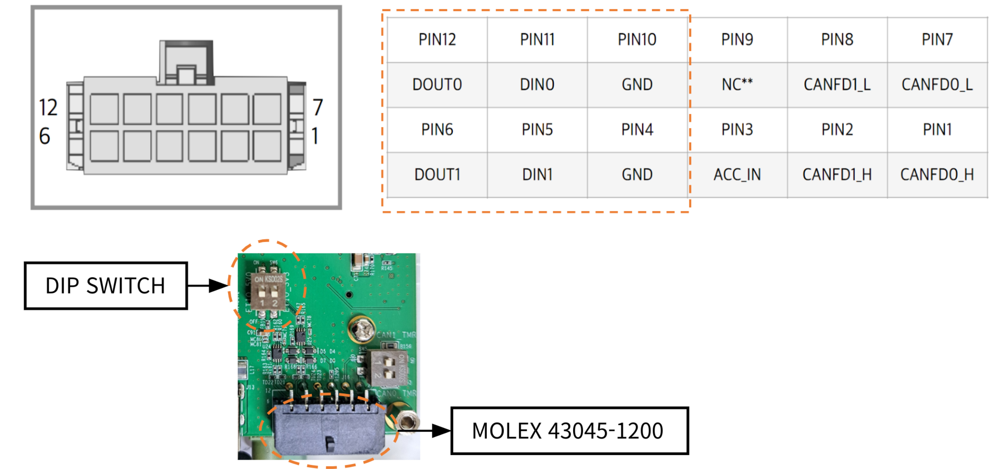

GPIO

딥스위치(DIP Switch)
위 사진의 딥스위치는 GPIO 전압을 설정하는 핀입니다.
1번 스위치 ON: 5V 입출력
2번 스위치 ON: 3.3V 입출력
Danger
주의: 절대로 두 스위치를 동시에 ON으로 설정하지 마십시오. 3.3V와 5V가 단락되어 장치가 손상될 수 있습니다.
입력 하이 임계값
5V 기준: 3.5V 이상
3.3V 기준: 2.0V 이상
출력 최대 전류
20mA
GPIO 핀 번호 매핑
GPIO |
핀 번호 |
GPIO 칩 |
|---|---|---|
DOUT0 |
PCC.02 |
gpiochip1 14 |
DOUT1 |
PCC.03 |
gpiochip1 15 |
DIN0 |
PAA.04 |
gpiochip1 4 |
DIN1 |
PAA.07 |
gpiochip1 7 |
EXT_SEL |
PBB.01 |
gpiochip1 9 |
멀티플렉서(Mux) 설정
EXT_SEL 설정을 통해 DIN0와 DOUT0를 GPIO 또는 카메라 프레임 동기화(FrameSync)로 사용할 수 있습니다.
EXT_SEL = 1:
DIN0: GPIO
DOUT0: GPIO
EXT_SEL = 0:
DIN0: 카메라 프레임 동기화 입력
DOUT0: 카메라 프레임 동기화 출력 (입력 신호를 그대로 전달)
GPIO 설정 및 제어 가이드
JetPack 버전에 따라 GPIO를 설정하고 제어하는 방법이 다릅니다. 아래는 JetPack 5와 JetPack 6에서의 GPIO 사용 방법을 정리한 가이드입니다.
JetPack 5에서의 GPIO 설정 및 제어
JetPack 5에서는 /sys/class/gpio 인터페이스를 통해 GPIO를 제어합니다. 다음은 GPIO를 활성화하고 방향을 설정하는 방법입니다.
GPIO 활성화:
echo 330 > /sys/class/gpio/export echo 331 > /sys/class/gpio/export echo 320 > /sys/class/gpio/export echo 323 > /sys/class/gpio/export echo 325 > /sys/class/gpio/export
GPIO 방향 설정:
echo out > /sys/class/gpio/gpio330/direction # DOUT0: 출력 echo out > /sys/class/gpio/gpio331/direction # DOUT1: 출력 echo in > /sys/class/gpio/gpio320/direction # DIN0: 입력 echo in > /sys/class/gpio/gpio323/direction # DIN1: 입력 echo out > /sys/class/gpio/gpio325/direction # EXT_SEL: 출력
GPIO 값 설정 및 읽기:
DOUT0 설정:
echo 1 > /sys/class/gpio/gpio330/value # High echo 0 > /sys/class/gpio/gpio330/value # Low
DOUT1 설정:
echo 1 > /sys/class/gpio/gpio331/value # High echo 0 > /sys/class/gpio/gpio331/value # Low
DIN0 값 읽기:
cat /sys/class/gpio/gpio320/valueDIN1 값 읽기:
cat /sys/class/gpio/gpio323/valueEXT_SEL 설정:
echo 1 > /sys/class/gpio/gpio325/value # High echo 0 > /sys/class/gpio/gpio325/value # Low
JetPack 6에서의 GPIO 설정 및 제어
JetPack 6에서는 libgpiod 유틸리티를 사용하여 GPIO를 제어합니다. gpioset과 gpioget 명령어를 사용하여 GPIO의 값을 설정하거나 읽을 수 있습니다.
DOUT0 설정:
gpioset -m hold gpiochip1 14=1 # High gpioset -m hold gpiochip1 14=0 # Low
DOUT1 설정:
gpioset -m hold gpiochip1 15=1 # High gpioset -m hold gpiochip1 15=0 # Low
DIN0 값 읽기:
gpioget gpiochip1 4
DIN1 값 읽기:
gpioget gpiochip1 7
EXT_SEL 설정:
gpioset -m hold gpiochip1 9=1 # High gpioset -m hold gpiochip1 9=0 # Low
Tip
gpioset 명령어는 기본적으로 실행 후 핀을 설정하고 종료되면 Low 상태로 돌아갑니다. 이를 방지하려면 -m hold 옵션을 사용하여 설정 상태를 유지할 수 있으며, 이 경우 명령어를 백그라운드에서 실행하거나 별도의 터미널 창에서 작업하는 것이 좋습니다. 자세한 내용은 gpioset --help를 통해 확인할 수 있습니다.
이 가이드를 통해 JetPack 5와 JetPack 6에서 GPIO를 설정하고 제어하는 방법을 익힐 수 있습니다. 각 버전에 맞는 방법을 사용하여 GPIO를 효과적으로 관리하시기 바랍니다.